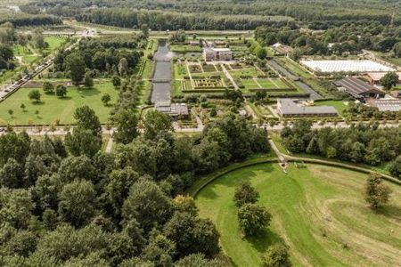
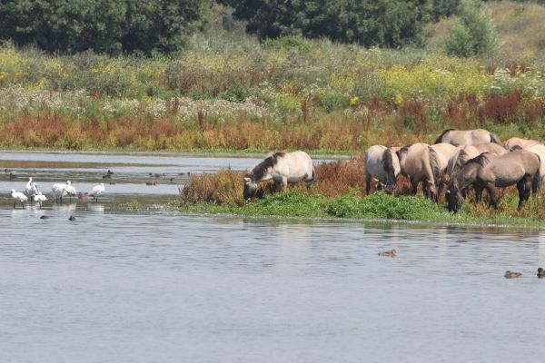

Vijf feiten
1. Het eerste huis werd in 1976 opgeleverd.
2. Onze stad heeft als eerste van de hele wereld een waterburgemeester!
3. Almere heeft wel 800 bruggen! Dat is twee keer zoveel als Venetië.
4. Ons verkeer heeft ieder een aparte baan! Auto's, bussen en fietsers hebben een eigen rijbaan.
5. Almere is omringd door prachtige natuurgebieden, denk bijvoorbeeld aan de Oostvaardersplassen.
Toeristische attracties
Stadslandgoed De Kemphaan
 Niet ver buiten de stad ligt Stadslandgoed de Kemphaan in Almere. Het landgoed ligt in Boswachterij Almeerderhout, midden in de bossen van Almere. In dit natuurgebied kun je uitstekend wandelen, fietsen en alles beleven wat de natuur te bieden heeft. Beleef de leukste uitjes voor jong en oud! Kom overnachten met het hele gezin en klim in de boomtoppen van Klimpark Fun Forest. Voor een écht avontuur kun je terecht bij Natuurcamping de Kemphaan. Verblijf in toffe accomodaties zoals de brandweerauto, yurt of natuurlijk jouw eigen tent. Een ander tof uitje is Dierenpark Almere Jungle, een unieke combinatie van zorg, botanische tuin en dierenopvang in één. Bezoek de Biologische Boerenmarkt en kom kijken bij de Stadsboerderij. Trek gekregen? Dan ben je altijd welkom bij Bosrestaurant Buitengewoon Lekker of Familie- en pannenkoekenrestaurant de Kemphaan. De Kemphaan is de ideale plek voor familievakantie, kinderfeestjes, schoolreisjes, bedrijfsuitjes en een romantisch weekendje weg. Het landgoed zelf is gratis te bezoeken en is het hele jaar open. De openingstijden per aanbieder zijn verschillend en kun je terug vinden op de aparte pagina’s van de partners. Honden zijn uiteraard welkom in het natuurgebied, maar houd ze aan de lijn om overlast te voorkomen.
De Oostvaardersplassen
 De Oostvaardersplassen is een bijzonder moerasgebied tussen Almere en Lelystad. Hier leven duizenden ganzen en watervogels, Heckrunderen, konikpaarden, edelherten en vossen. Start een mooie wandel- of fietstocht vanuit het Natuurbelevingcentrum de Oostvaarders en geniet van een lekkere lunch in het restaurant. Spot de dieren in het natuurgebied met de aanwezige verrekijkers of ga op pad met de boswachter. Met een beetje geluk zie je de zeldzame zeearend! Natuurbelevingcentrum de Oostvaarders is de perfecte plek om een ontdekkingstocht naar de Oostvaardersplassen Almere te beginnen. Je kunt de fietsfolder en wandelfolder gratis downloaden. Vanuit het gebouw heb je met de aanwezige verrekijkers een prachtig uitzicht over de uitgestrekte vlaktes en plassen. Op de begane grond zit restaurant Paviljoen de Oostvaarders met een vega- en vegan-vriendelijke menukaart